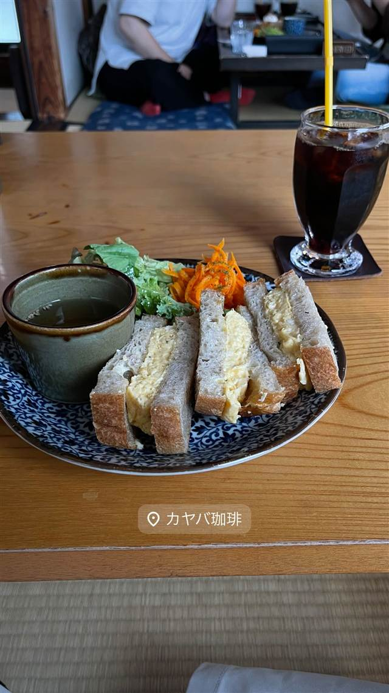
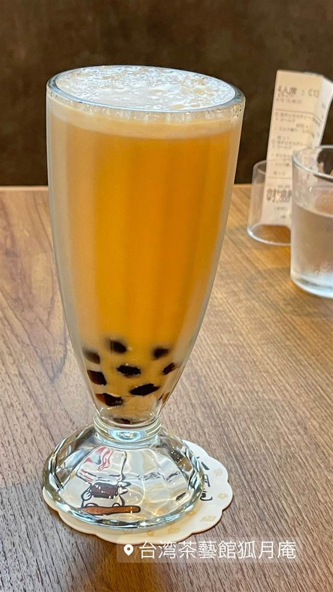
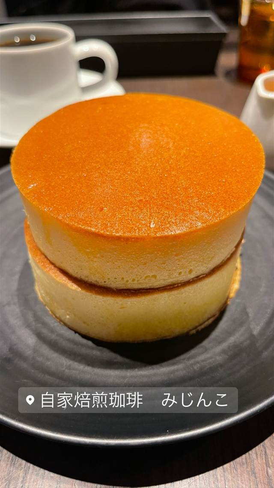
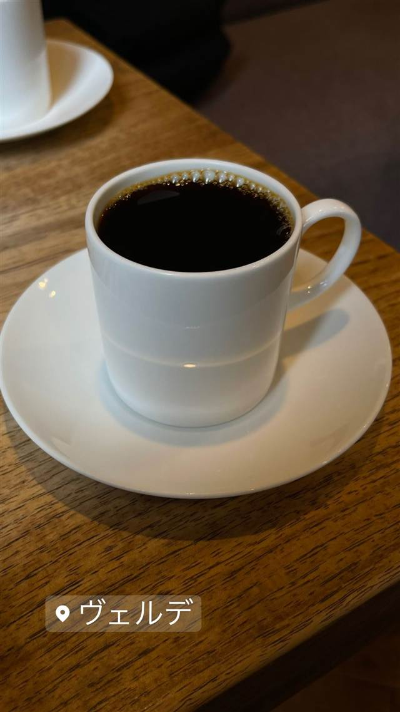
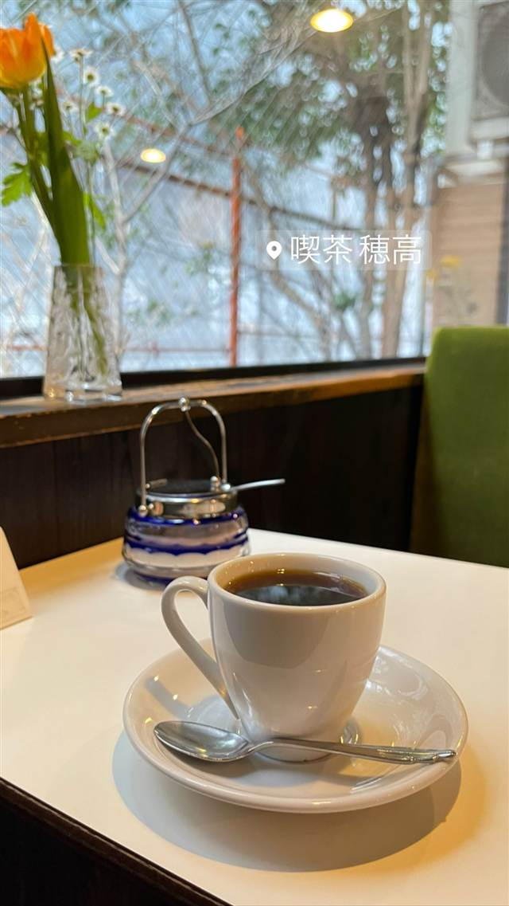
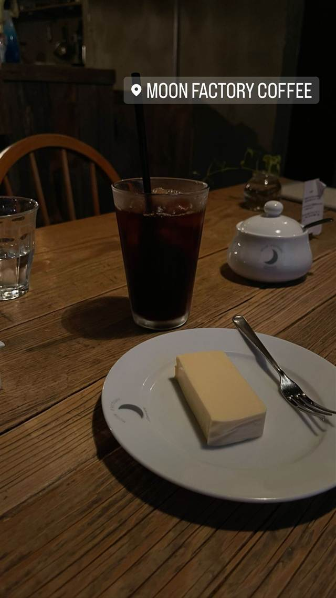

カフェ · 喫茶店 · 谷中
カヤバ珈琲
大正5年築の町家、たまごサンドは旧店時代から変わらぬ味の老舗喫茶
カヤバ珈琲
谷中の「カヤバ珈琲」は大正5年頃に建てられた町家建築で、ミルクホールなどを経て1938年（昭和13年）に喫茶店として創業。2006年に一度閉店したが、地元のNPOが中心となり2009年に復活し、名物のたまごサンドは旧店時代から変わらぬ味として愛され続けている。
TRIVIA
豆知識
- 建物は大正5年頃築の町家建築で、台東区景観コンクールを受賞した
- 2006年に一度閉店したが、地域のNPOが中心となり2009年に復活した
REVIEWS
世間の評判
3.75食べログ
レトロな空間と名物たまごサンド
- 古き良き日本家屋のような時が止まったレトロな空間を評価する声が多い
- ふわふわのパンと厚みのある卵焼きのたまごサンドを評価する声が多い
- 2階の座敷席の落ち着いた雰囲気を評価する声が複数あるという意見がある
- 予約なしではほぼ入店できず待つことが多いという指摘が複数ある
食べログ 口コミ1525件
| 創業 | 喫茶店としては1938年（昭和13年）創業。建物は大正5年頃の建築。 |
|---|---|
| 系譜 | 建物はもともと店舗兼住宅で、ミルクホールやかき氷店を経て1938年に「カヤバ珈琲店」となった。2006年に先代が亡くなり一度閉店したが、地元のNPO「たいとう歴史都市研究会」らが中心となり2009年に復活。 |
| 看板 | たまごサンドとアイスコーヒー |
| こだわり | 厚焼き玉子を温かいうちに、しっとりふわふわのパンでサンドする、旧店時代から変わらぬレシピ。 |
| 掲載・評価 | 平成11年、台東区景観コンクールまちかど賞受賞。 |
| どこから | 都心 |
| 行くなら | 行列 |
| 営業時間 | 月 休み 火〜日 08:00-18:00 |
| 予算 | 昼 ¥1,000～¥1,999 夜 ¥1,000～¥1,999 |
| 定休日 | 月曜 |
| 場所 | 根津駅 東京都台東区谷中6-1-29 |
| メモ | 谷中・根津エリアの人気店で、平日でも行列ができる。ランチは予約推奨。 |
食べたもの：たまごサンドとアイスコーヒー
OFFICIAL
店からの知らせ
その日の限定や臨時の休みは、店のInstagramに出ます。
NEARBY
近い店・同じ系統の店
-
 ★
喫茶店 浅草
金龍（喫茶店）
元は旅館だった建物で味わうサイフォン式コーヒー
昼 ¥1,000～¥1,999 夜 ¥1,000～¥1,999
★
喫茶店 浅草
金龍（喫茶店）
元は旅館だった建物で味わうサイフォン式コーヒー
昼 ¥1,000～¥1,999 夜 ¥1,000～¥1,999
-

台湾 日暮里駅 台湾茶藝館 狐月庵 鉄観音・茉莉花・蜜香紅茶から選べるタピオカミルクティー 昼 ¥1,000～¥1,999 -

喫茶店 御茶ノ水駅 自家焙煎珈琲 みじんこ 銅板でじっくり焼き上げる厚みのあるホットケーキ 昼 ¥1,000～¥1,999 夜 ¥1,000～¥1,999 -

喫茶店 恵比寿駅 ヴェルデ 40年以上毎日自家焙煎を続けるネルドリップ、食べログ百名店 昼 ～¥999 夜 ～¥999 -

喫茶店 御茶ノ水駅 喫茶 穂高 昭和30年創業で山小屋風の内装をビル建替え後も忠実に復元した喫茶店 昼 ～¥999 夜 ～¥999 -

喫茶店 三軒茶屋 MOON FACTORY COFFEE 京都の名店の姉妹店で味わう北海道美幌豆のハンドドリップ 昼 ¥1,000～¥1,999 夜 ¥1,000～¥1,999
ONSEN & SAUNA